来源：大科普
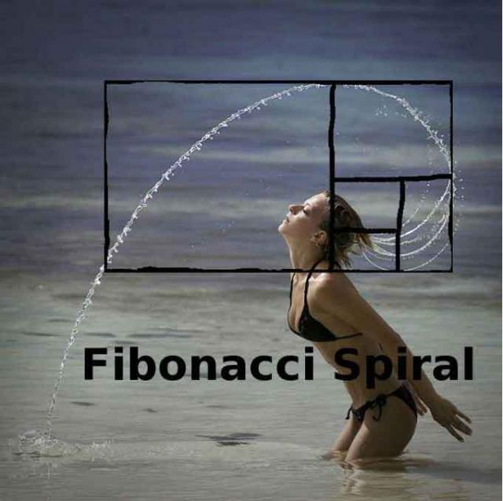
当谈到复杂数学定理的证明时，很多人常常为之色变，认为这只是一个枯燥的公式堆砌和深奥的数学推导过程。这当然是一个让笔者感到纠结的误解。因为数学推导中包含的美丽与精巧实在是一道亮丽的风景线，而这种亮丽甚至不需要用语言来描述。所以我在这里盘点了数学里十大不需要语言的证明（proofs without words）。让读者在领略数学所包含的无与伦比的精巧之外，更从此爱上数学。
0. 勾股定理
这个大家小学就学过的古老定理，有着无数传奇故事。我可以很随意的写出她的10个不同的证明方法。而路明思（Elisha Scott Loomis）在 《毕达哥拉斯命题》（ Pythagorean Proposition）提到这个定理的证明方式居然有367种之多，实在让人惊讶。这里给出一个不需要语言的证明方法。
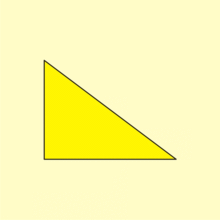
实际上勾股定理是余弦定理的一种特殊情况，而余弦定理的证明，同样可以不用语言。
(余弦定理：cosC=(a²+b²-c²)/2ab; cosA=(b²+c²-a²)/2bc;)
(sin²α=[1-cos(2α)]/2; cos²α=[1+cos(2α)]/2)
(sin90°=1, cos90°=0;)
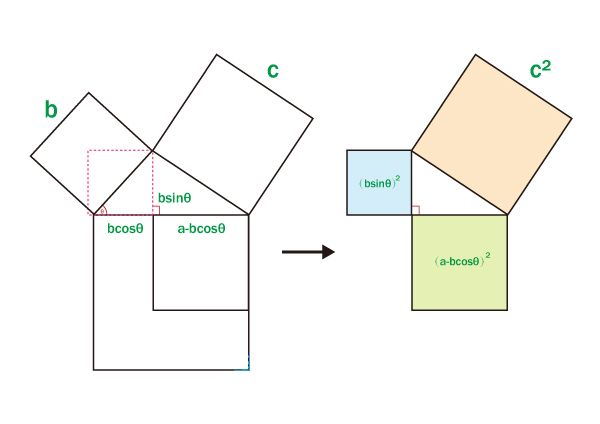
1. 关于反正切的恒等式
关于反正切，有如下两个很精彩的等式：
arctan1/2+arctan1/3=π/4
acrtan1+arctan2+arctan3=π
(三角函数是数学中常见的一类关于角度的函数。也可以说以角度为自变量，角度对应任意两边的比值为因变量的函数叫三角函数，三角函数将直角三角形的内角和它的两个边长度的比值相关联，也可以等价地用与单位圆有关的各种线段的长度来定义。)
(反正切函数:y=tan x在(-π/2，π/2）上的反函数，叫做反正切函数。记作arctanx，表示一个正切值为x的角，该角的范围在（-π/2，π/2）区间内。定义域R，值域（-π/2，π/2）。)(π=180°)
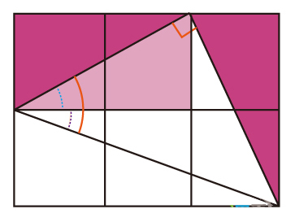
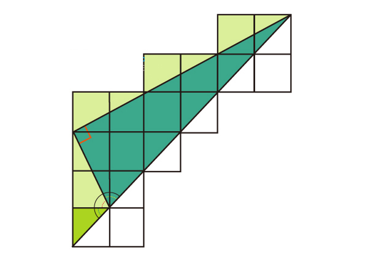
2. 几何平均值小于算术平均值
几何平均数（geometric mean）是指n个观察值连乘积的n次方根。是不等式中最重要和基础的等式。
它也可以通过图形来证明。
(几何平均数体现了一个几何关系，即过一个圆的直径上任意一点做垂线，直径被分开的两部分为a,b,那么那个垂线在圆内的一半长度就是根号ab,并且(a+b)/2>=根号ab!这就是它的几何意思，也是称之为几何平均数的原因。)
(作一正方形，使其面积等于以a,b为长宽的矩形，则该正方形的边长即为a、b的几何平均数.)
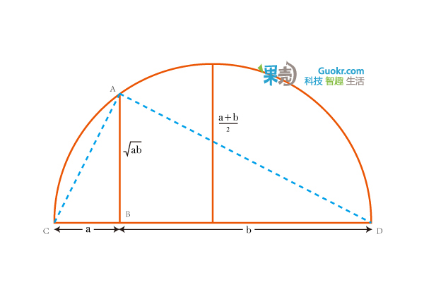
注意到△ABC∽△DBA ,可以很轻松地得到AB=√ab。剩下的就显而易见了。
3. 1+3+5+…+（2n-1）= n2
这是奇数的求和公式，下图是当n=8时的情形
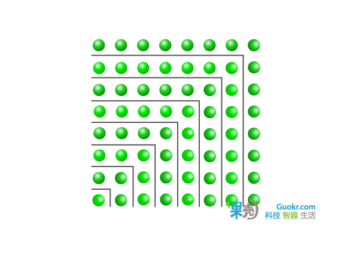
4. 平方数的求和公式
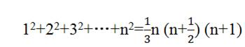
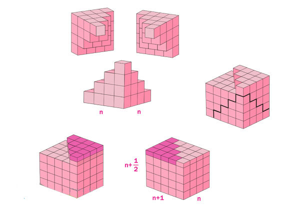
5. 立方数的求和公式
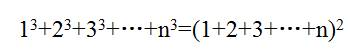
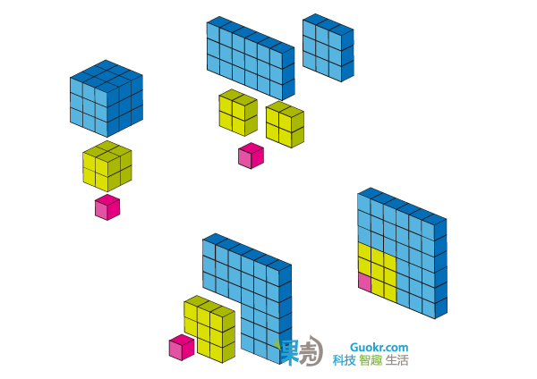
6. 斐波那契数列的恒等式
可谓家喻户晓的斐波那契数列指的是这样一个数列：1、1、2、3、5、8、13、21 ……
这个数列从第三项开始，每一项都等于前两项之和， F n+1 = F n + F n-1 。
它的通项公式是
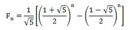
有趣的是，这样一个完全是自然数的数列，通项公式居然是用无理数来表达的。而且当n无穷大时 F n-1 / F n 越来越逼近黄金分割数0.618。正因为它的种种神奇性质，美国数学会甚至从1960年代起出版了《斐波纳契数列》季刊。关于斐波那契数列，有一个恒等式是这样的
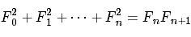
(其中F0=1)这个等式很漂亮，不需要借助复杂的数学推导，它有一个很直观的证明方法
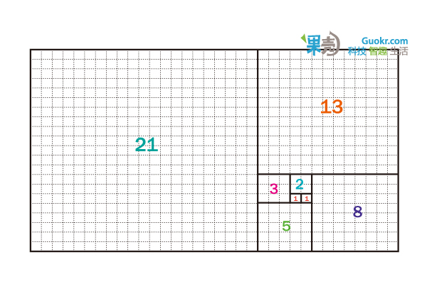
7. 结果为1/3的一组分子式
下面是一组分子式，他们的结果都等于1/3 ：
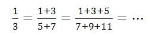
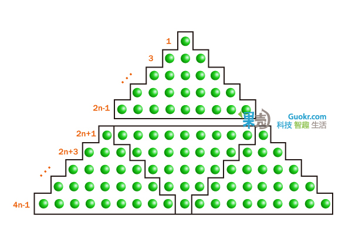
8. 最受数学家喜爱的无字证明
1989年的《美国数学月刊》（American Mathematical Monthly）上有一个貌似非常困难的数学问题：
下图是由一个个小三角形组成的正六边形棋盘，现在请你用右边的三种（仅朝向不同的）菱形把整个棋盘全部摆满（图中只摆了其中一部分），证明当你摆满整个棋盘后，你所使用的每种菱形数量一定相同。
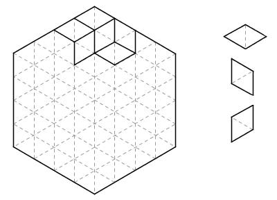
《美国数学月刊》提供了一个非常帅的“证明”。把每种菱形涂上一种颜色，整个图形瞬间有了立体感，看上去就成了一个个立方体在墙角堆叠起来的样子。三种菱形分别是从左侧、右侧、上方观察整个立体图形能够看到的面，它们的数目显然应该相等。
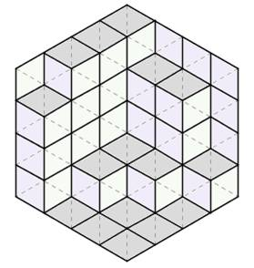
它把一个纯组合数学问题和立体空间图形结合在了一起，实在让人拍案叫绝。这个问题及其鬼斧神工般的“证明”流传甚广，深受数学家们的喜爱。死理性派曾经讨论过 这个问题 。同时它还是死理性派logo的出处。
9. 棋盘上的数学证明
在一个8×8的国际象棋棋盘上，我们可以用32张多米诺骨牌（是两个相连正方形的长方形牌）覆盖整个棋盘上的64个方格。如果将对角线上的两个方格切掉，剩下来的62个格子还能用31张骨牌覆盖住吗？
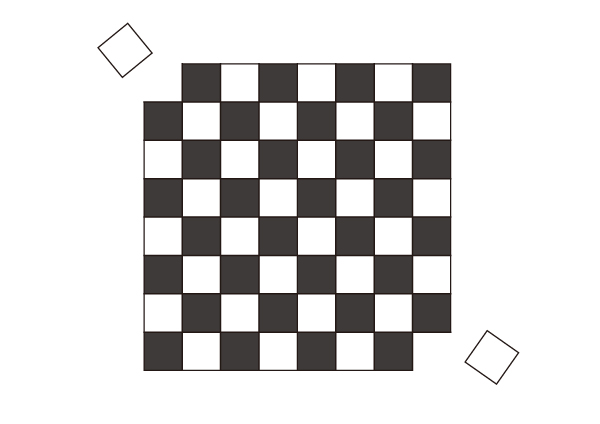
答案是不能的。每一张骨牌在棋盘上必是覆盖住两个相邻方格，一白一黑。所以31张骨牌应该可以盖住31个黑格和31个白格。而这被切了角的棋盘上的方格有32个是一种颜色，另一种颜色是30个，因此是不能被31张骨牌覆盖的。
但是如果我们切掉的不是颜色相同的两个呢？假如我们从棋盘的任何部位切掉两个颜色不同的方格，那么剩下来的62格是否一定能被31张骨牌完全盖住？我可以告诉你这是一定能做到的,并且关于这个结论，存在一个非常漂亮的证明。建议读者在继续往下阅读前，可以先自行思考如何证明这个结论。
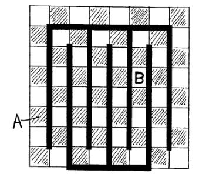
上图就是那个漂亮的证明。不妨对它再赘述两句。粗黑线条将整个棋盘转变为一条首尾相连、黑白格相间的封闭路线。从这棋盘上切掉任何两个颜色不同的方格，会让这个封闭线路变成两段线路（如果切掉的方格是相连的，那就是一条线路）。在这两段（或一段）线路中，两种颜色的格子数量都是偶数，故分别都可以被若干张骨牌覆盖。从而证明整个棋盘可以被31张骨牌完全覆盖。
这个著名的棋盘问题是数学游戏大师马丁•加德纳提出的，而上述精妙绝伦的证明则是数学家哥莫瑞（Ralph Gomory）找到的。它们后来被收录在《意料之外的绞刑和其他数学娱乐》这本书里。